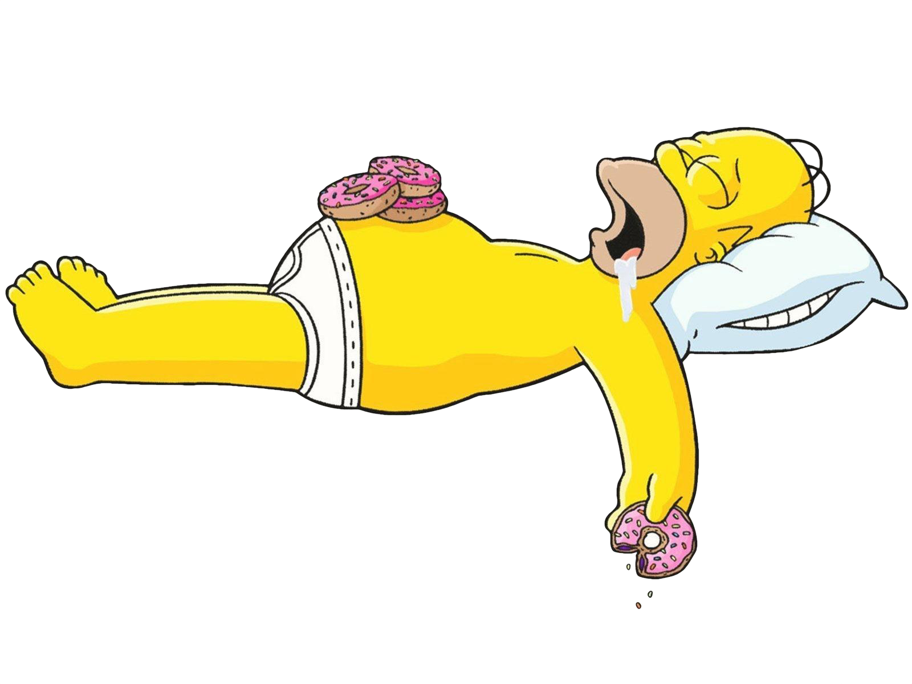
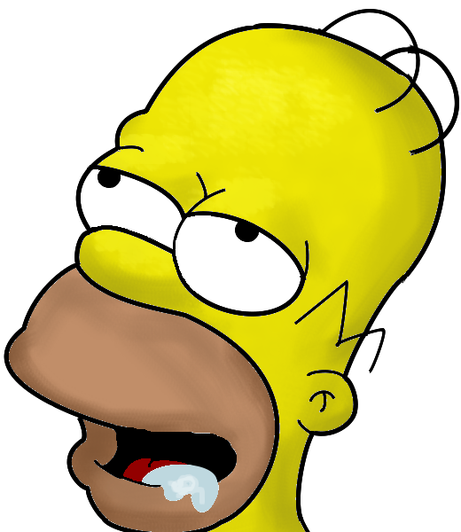
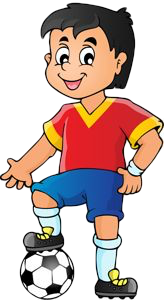
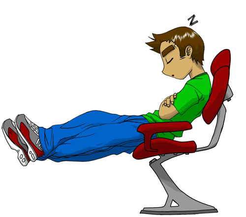
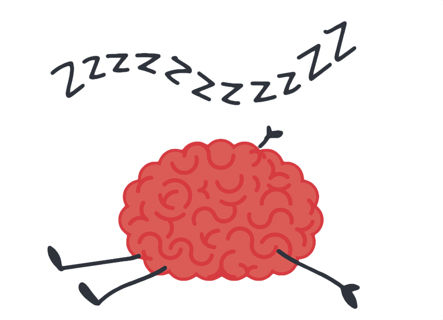
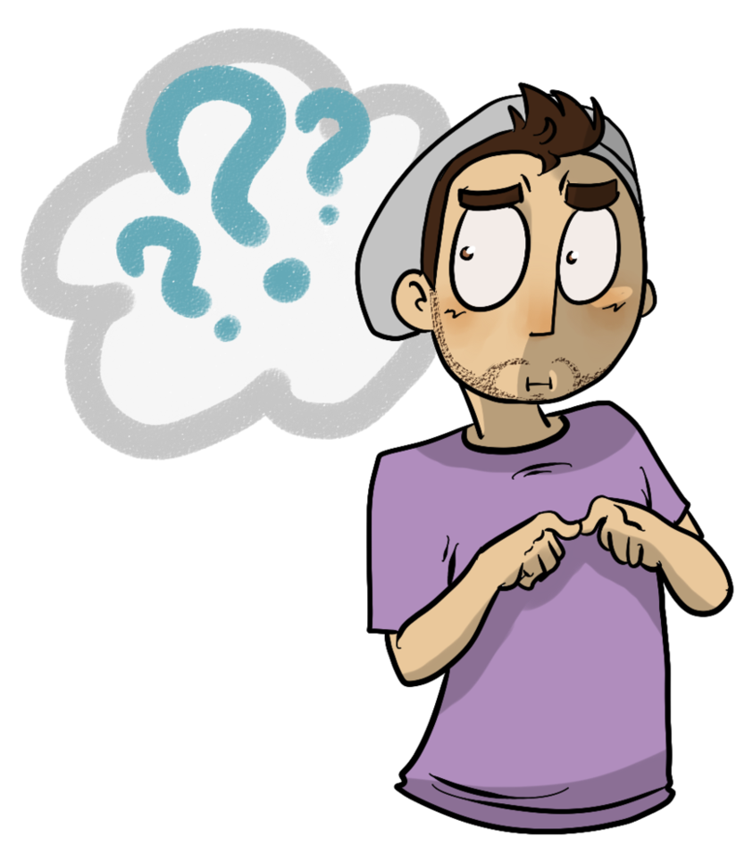
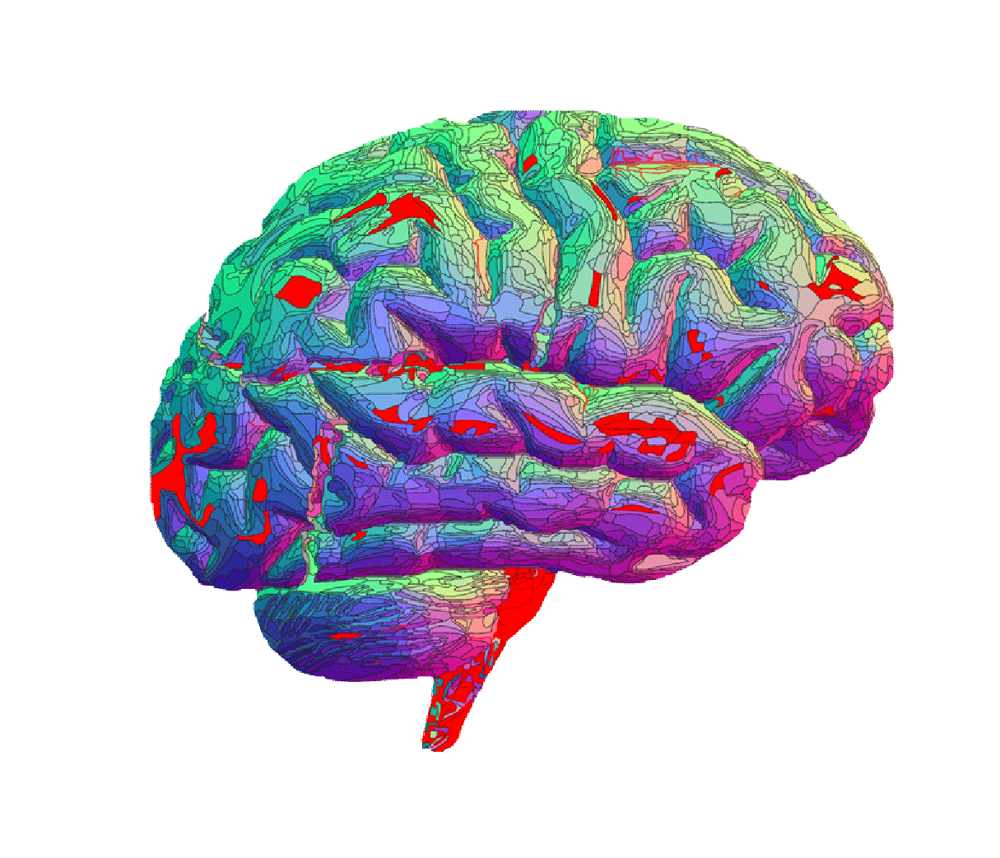

Hva skjer egentlig når vi sover?
 
Har du lært noe om søvn idag? :)
Her har du en oversikt over hva søvn hjelper deg å minske og bedre
Hjernen bruker tid på å helbrede seg selv og hjelp kroppen gro.
Hjernen din er fortsatt aktiv når du sover.
Uten søvn er det vanskelig for hjernen å konsentrere seg og lære nye ting.
Når du sover bruker hjernen mindre energi og kan derfor lade
Dette gjør at du lettere sover når det blir mørkt.
Hjernen din har en biologisk klokke, som tar inn informasjon i nærmiljøet.
Dette fører til at du blir trøtt og vil sove :D
Alle aktivitet du gjør gjennom en dag bruker energi
Heisann! Jeg er en søvnig type, så jeg kan en del om dette!





